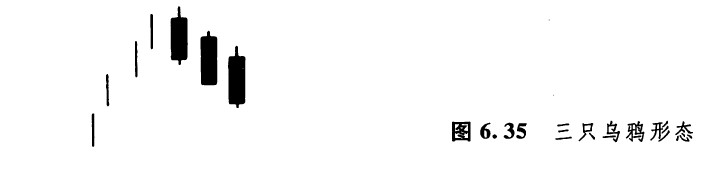
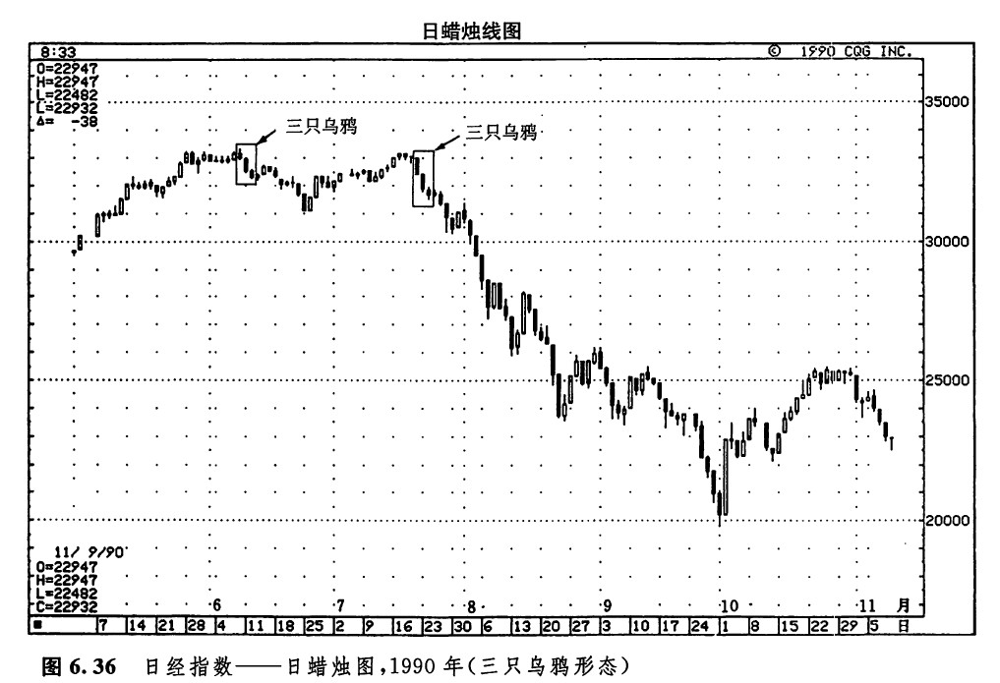
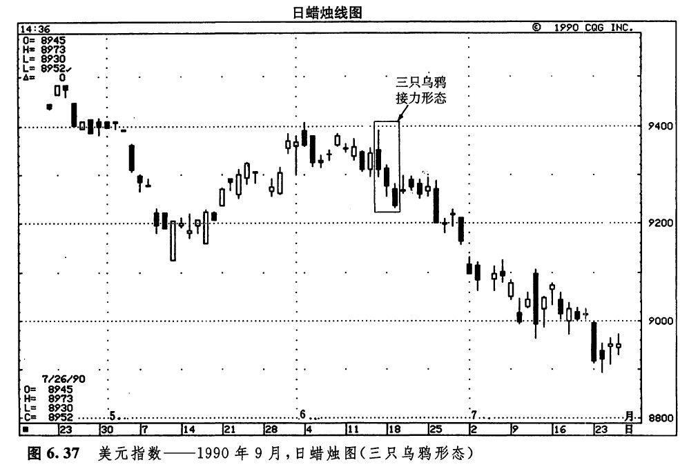

在向上跳空二只乌鸦形态中，包含了两根黑色蜡烛线。如果在类似的形态中，连续出现了三根依次下降的黑色蜡烛线，则构成了所谓的三只乌鸦形态（图6.35所示）。如果三只乌鸦形态出现在高价格水平上，或者出现在经历了充分发展的上涨行情中，就预示着价格即将下跌。有的时候，三只乌鸦形态又称作三翅乌鸦形态。日本有句俗语：“好事不出门，坏事长翅膀”。拿这句话来形容这种“三只翅膀”的乌鸦，那是再恰当不过了。正如该形态的名称所示，三只乌鸦指的就是这三根黑色的蜡烛线。这三根黑色蜡烛线勾勒出了这么一幅不祥的景像：一群乌鸦栖落在一棵枯朽的大树上。因此，三只乌鸦形态具有看跌的意味。从外形上说，这三根黑色蜡烛线的收市价都应当处于其最低点，或者接近其最低点；每根黑色蜡烛线的开市价也都应该处于前一个实体的范围之内。另外，分析者可能还希望“三只乌鸦”中的第一根黑色蜡烛线的实体，居于它之前的那根白色蜡烛线的最高点以下。

如图6.36所示，是一个典型的三只乌鸦形态的实例。6月中旬，飞来了三只乌鸦。一个月以后，即7月中旬，又出现了另一个三只乌鸦形态。7月的三只乌鸦同时也是市场对6月的三只乌鸦的最高点的试探，这次试探以失败而告终。这个高点的水平大约为33000点。这样，就形成了一个双重顶形态。如图6.37所示，也是一个三只乌鸦形态的实例。6月15日是三只乌鸦中的第一只。这三只乌鸦有个很有意思的地方，第二根黑色蜡烛线和第三根黑色蜡烛线的开市价均分别处在前一根黑色蜡烛线的收市价的水平上，或者与之非常接近。这种情况就称为三只乌鸦接力形态。人们认为这种形态特别疲软，不过，这是一种非常罕见的形态。


下一篇：反击线形态（约会线形态）
上一篇：向上跳空二只乌鸦